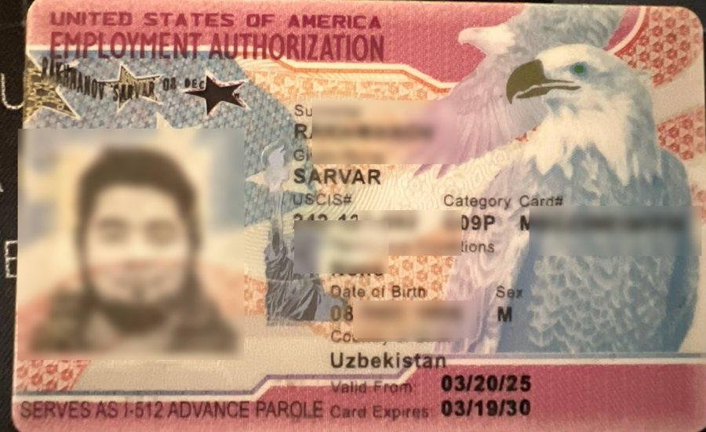
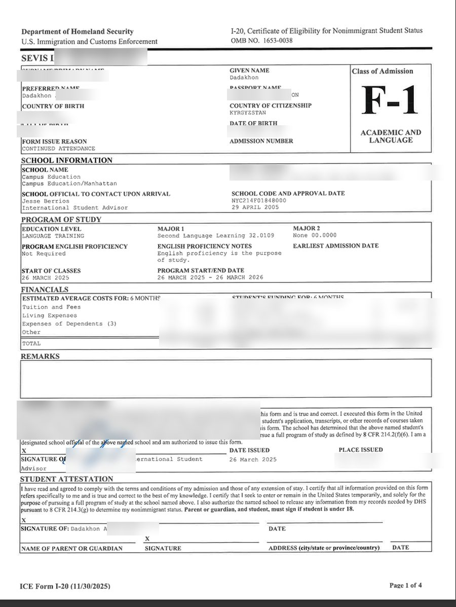
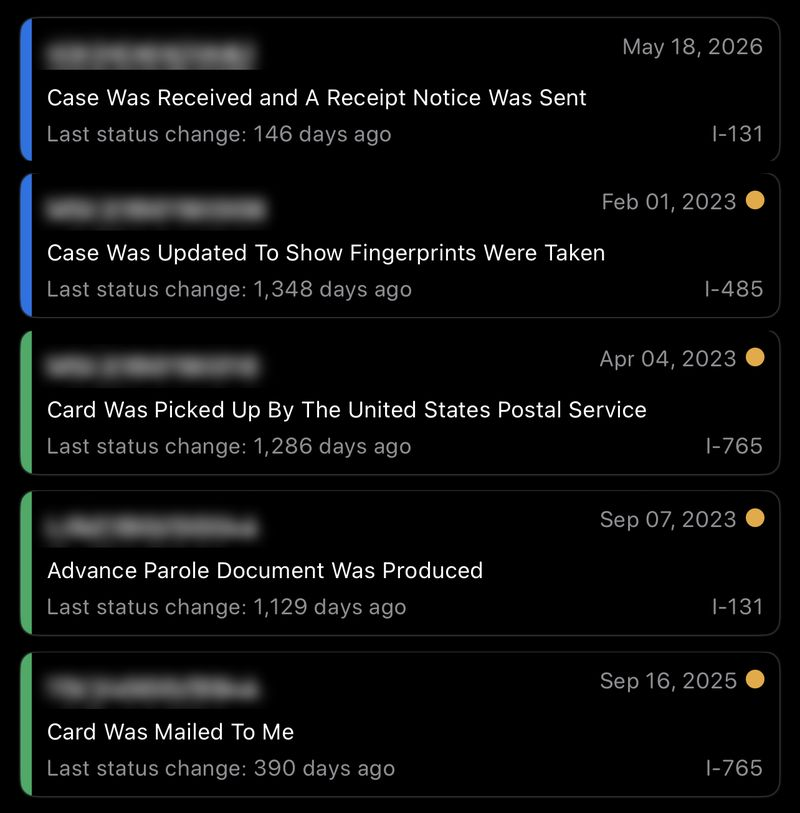

Turistik / mehmon
AQShga sayohat, qarindoshlarni ko‘rish yoki davolanish uchun.
B-2 turistik vizasi (B1/B2)
Kimlar uchun
Sayyohlar, qarindosh yoki do‘stlarini ko‘rmoqchi bo‘lganlar va davolanishga boradiganlar.
Asosiy talablar
- Amaldagi pasport va DS-160 tasdig‘i
- Viza to‘lovi va AQSh elchixonasi yoki konsulligida intervyu
- Vatan bilan mustahkam bog‘liqlik dalillari (ish, oila, mulk)
- Safar uchun yetarli mablag‘
Odatdagi ko‘rib chiqish muddati
Odatda qaror intervyuda chiqadi, pasport bir necha kundan bir necha haftagacha qaytariladi. Intervyu navbati elchixonaga qarab haftalardan ko‘p oylargacha farq qiladi; travel.state.gov’ni ko‘ring.
RISK qanday yordam beradi
Imkoniyatlaringizni halol baholaymiz, DS-160 ni to‘ldiramiz, navbatga yozamiz, hujjatlarni tartiblaymiz va o‘zbek, rus yoki ingliz tilida sinov intervyulari o‘tkazamiz. 214(b) rad javobidan keyin ham yordam beramiz.
ESTA / vizasiz kirish (mos davlatlar uchun)
Kimlar uchun
Visa Waiver dasturi davlatlari fuqarolari, 90 kungacha safarlar uchun.
Asosiy talablar
- Mos pasport (biometrik)
- Onlayn ESTA arizasi
- Avval immigratsiya qoidabuzarliklari bo‘lmagan
Odatdagi ko‘rib chiqish muddati
Odatda 72 soat ichida (ko‘pincha bir necha daqiqada) tasdiqlanadi.
RISK qanday yordam beradi
Sizga ESTA yoki B viza mos kelishini tekshiramiz.
Biznes
Qisqa biznes safarlari, konferensiyalar, muzokaralar va ko‘rgazmalar.
B-1 biznes mehmon vizasi
Kimlar uchun
Uchrashuv, konferensiya, trening yoki shartnoma muzokaralariga boradigan tadbirkorlar (AQShda pullik ishsiz).
Asosiy talablar
- DS-160 va intervyu
- Taklifnoma yoki konferensiyaga ro‘yxatdan o‘tish
- Ish beruvchi xati va biznes bog‘liqlik dalillari
Odatdagi ko‘rib chiqish muddati
B-2 bilan bir xil: odatda qaror intervyuda; navbat kutish davlatga qarab farq qiladi.
RISK qanday yordam beradi
Taklifnoma va ilova xatlarni tayyorlaymiz, biznesingiz dalillarini tartiblaymiz va intervyuga tayyorlaymiz.
O‘qish
AQSh universitetlari, kollejlari, til maktablari yoki almashinuv dasturlarida o‘qish.
F-1 talaba vizasi
Kimlar uchun
SEVP sertifikatiga ega maktab, universitet yoki til dasturiga qabul qilingan talabalar.
Asosiy talablar
- Maktabdan I-20 shakli
- To‘langan SEVIS I-901 yig‘imi
- O‘qish va yashash xarajatlari uchun mablag‘ tasdig‘i
- Ta’lim hujjatlari va qaytish niyati
Odatdagi ko‘rib chiqish muddati
Odatda qaror intervyuda; talaba vizasi dastur boshlanishidan 365 kungacha oldin berilishi mumkin. Bahor yoki yozda erta yoziling.
RISK qanday yordam beradi
Universitet tanlash va qabulga yordam, moliyaviy hujjatlar va homiy xatlari, DS-160 va intervyu tayyorgarligi.
J-1 almashinuv vizasi
Kimlar uchun
Work & Travel talabalari, amaliyotchilar, stajyorlar, tadqiqotchilar, au pair va almashinuv o‘qituvchilari.
Asosiy talablar
- Dastur homiysidan DS-2019 shakli
- SEVIS yig‘imi
- Dastur talab qiladigan mablag‘ va ingliz tili darajasi
Odatdagi ko‘rib chiqish muddati
Odatda homiy DS-2019 bergandan keyin qaror intervyuda chiqadi.
RISK qanday yordam beradi
Homiy tanlash, hujjatlarni tayyorlash va intervyu mashqida yordam beramiz.
M-1 kasbiy talaba vizasi
Kimlar uchun
Kasbiy va texnik dasturlar talabalari.
Asosiy talablar
- I-20 (M) shakli
- O‘qish to‘lovi va yashash uchun to‘liq mablag‘ tasdig‘i
Odatdagi ko‘rib chiqish muddati
Odatda qaror intervyuda chiqadi.
RISK qanday yordam beradi
Dastur tanlash va arizaning to‘liq hamrohligi.
Ish
Mutaxassislar va kompaniya ichida ko‘chiriladigan xodimlar uchun vaqtinchalik ish vizalari.
H-1B mutaxassislik ishi
Kimlar uchun
Kamida bakalavr darajasi va AQSh ish beruvchisidan mutaxassislik bo‘yicha ish taklifi bor mutaxassislar.
Asosiy talablar
- AQShdagi homiy ish beruvchi va yillik ro‘yxat/lotereya (kvotali ishlar uchun)
- Labor Condition Application (LCA)
- Diplom yoki unga teng tajriba
Odatdagi ko‘rib chiqish muddati
Ro‘yxatdan o‘tish martda; petitsiyalar odatda USCIS’da bir necha oyda yoki premium processing bilan 15 ish kunida ko‘rib chiqiladi.
RISK qanday yordam beradi
Ish beruvchi va nomzodlarga petitsiya dalillarini tartiblash va konsullik bosqichida yordam beramiz.
L-1 kompaniya ichida ko‘chirish
Kimlar uchun
Chet elda va AQShda ofislari bor kompaniyaning rahbarlari, menejerlari va mutaxassislari.
Asosiy talablar
- So‘nggi 3 yil ichida chet eldagi bog‘liq kompaniyada kamida 1 yil ishlagan
- Kompaniyalar o‘rtasida mos bog‘liqlik
Odatdagi ko‘rib chiqish muddati
Odatda USCIS’da bir necha oy; premium processing mavjud.
RISK qanday yordam beradi
Kompaniyalar bog‘liqligi va lavozim dalillari, shuningdek konsullik intervyusiga tayyorgarlik.
O-1 favqulodda qobiliyat
Kimlar uchun
Fan, biznes, san’at, ta’lim yoki sportda favqulodda yutuqlarga ega insonlar.
Asosiy talablar
- Mukofotlar, nashrlar, yuqori maosh, OAV’dagi chiqishlar, hakamlik kabi dalillar
- AQSh ish beruvchisi yoki agentidan petitsiya
Odatdagi ko‘rib chiqish muddati
Odatda bir necha oy; premium processing mavjud.
RISK qanday yordam beradi
Kuchli dalillar portfoliosi va tavsiya xatlarini tayyorlaymiz.
Immigratsiya / PR / green karta
Oila, ish, DV lotereya orqali green karta (doimiy yashash) va AQSh ichidagi ishlar.
DV lotereya 2027 (Diversity Visa green kartasi)
Kimlar uchun
Mos davlatlarda (jumladan O‘zbekistonda) tug‘ilgan, o‘rta ma’lumotli yoki 2 yillik mos ish tajribasiga ega insonlar.
Asosiy talablar
- Ro‘yxatdan o‘tish davrida (odatda oktyabr–noyabr) dvprogram.state.gov’da bepul onlayn ariza
- To‘g‘ri va yangi rasm
- Yutgan bo‘lsangiz: DS-260, fuqarolik hujjatlari, tibbiy ko‘rik va intervyu
Odatdagi ko‘rib chiqish muddati
Natijalar odatda keyingi yilning mayidan ma’lum bo‘ladi; g‘oliblar intervyusi 1-oktyabrdan boshlanadigan moliya yili davomida o‘tadi.
RISK qanday yordam beradi
To‘g‘ri rasm va anketa, tasdiqlash raqamini saqlash, so‘ng g‘oliblarga to‘liq yordam: DS-260, hujjatlar va intervyu tayyorgarligi.
Oila orqali green karta
Kimlar uchun
AQSh fuqarolarining turmush o‘rtoqlari, farzandlari, ota-onalari, aka-uka va opa-singillari hamda doimiy rezidentlarning turmush o‘rtoqlari va farzandlari.
Asosiy talablar
- AQShdagi qarindoshdan I-130 petitsiyasi
- Moliyaviy kafillik (I-864)
- Fuqarolik hujjatlari va tibbiy ko‘rik
Odatdagi ko‘rib chiqish muddati
Odatda yaqin qarindoshlar uchun taxminan bir yildan imtiyozli toifalar uchun ko‘p yillargacha, Visa Bulletin’ga qarab.
RISK qanday yordam beradi
Petitsiya, NVC hujjatlari va intervyu tayyorgarligini tashkil qilamiz.
K-1 kelin/kuyov vizasi
Kimlar uchun
Kelgandan keyin 90 kun ichida turmush qurishni rejalashtirgan AQSh fuqarolarining kelin-kuyovlari.
Asosiy talablar
- I-129F petitsiyasi
- Haqiqiy munosabatlar va so‘nggi 2 yil ichida shaxsan uchrashganlik dalillari
Odatdagi ko‘rib chiqish muddati
Odatda jami ko‘p oydan bir yildan ortiqgacha.
RISK qanday yordam beradi
Munosabat dalillari, anketalar va intervyu tayyorgarligi.
Ish orqali green karta (EB-1, EB-2 NIW, EB-3, EB-5)
Kimlar uchun
AQSh ish beruvchisi homiyligidagi ishchilar, alohida qobiliyatli insonlar (NIW) va investorlar (EB-5).
Asosiy talablar
- Ko‘plab EB-2/EB-3 ishlari uchun PERM mehnat sertifikati
- I-140 petitsiyasi
- EB-5: mos investitsiya
Odatdagi ko‘rib chiqish muddati
Odatda toifa va davlatga qarab bir yildan bir necha yilgacha.
RISK qanday yordam beradi
Toifa tanlash, dalillarni rejalashtirish va hujjatlarni tayyorlash.
AQSh ichidagi immigratsiya ishlari
Kimlar uchun
AQShda bo‘lib, maqomini o‘zgartirish yoki saqlab qolish kerak bo‘lganlar.
Asosiy talablar
- Maqomni doimiy rezidentga o‘zgartirish (I-485)
- RFE (qo‘shimcha dalil so‘rovi) javoblari
- Maqomni uzaytirish yoki o‘zgartirish (I-539), masalan B-2 → F-1
- Ish ruxsatnomasi (EAD) va sayohat hujjati
Odatdagi ko‘rib chiqish muddati
Odatda bir necha oydan bir yildan ortiqgacha; uscis.gov’dagi muddatlarni tekshiring.
RISK qanday yordam beradi
Arizangizni tartiblaymiz, RFE javoblarini yozamiz va muddatlarni nazorat qilamiz.
Ko‘rib chiqish muddatlari umumiy bo‘lib, tez-tez o‘zgaradi. Har doim joriy rasmiy muddatni tekshiring: travel.state.gov · uscis.gov
Mijozlarimizning AQSh immigratsiya natijalari




